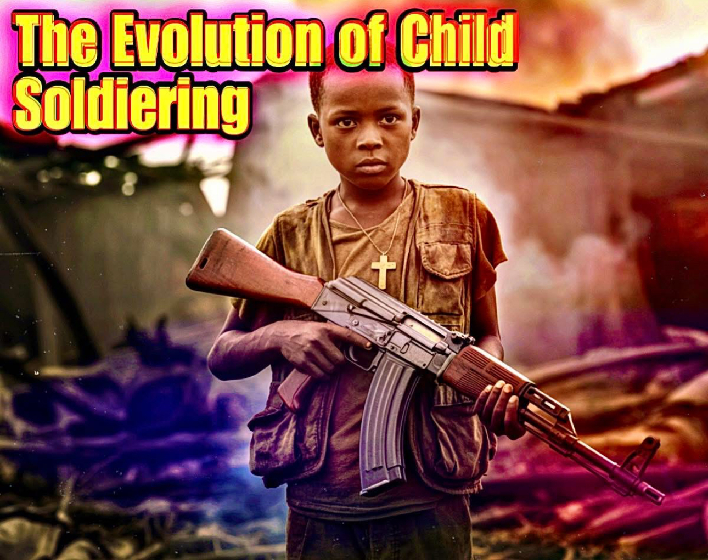

The Evolution of Child Soldiering
The practice of employing children in warfare is not a modern aberration but a recurring pattern deeply embedded in the history of organized violence. From ancient tribal battles to colonial imperial expansions and the ideological revolutions of the 20th century, children have been conscripted, coerced, or willingly enlisted into conflict in nearly every part of the world. Understanding the historical continuum of child soldiering challenges the notion that it is purely a byproduct of modern state collapse or insurgency, it is, rather, a persistent reflection of how societies mobilize vulnerability, loyalty, and labor during times of war. In ancient societies, children were often introduced to warfare as a rite of passage or social necessity. In Sparta, boys as young as seven were removed from their families and placed in military agoge camps, trained to endure suffering and cultivate obedience for eventual frontline service. In imperial Rome, adolescents formed part of auxiliary ranks, while children of the elite often served as squires, learning the mechanics of battle before their teenage years. In many African tribal communities, youth initiation rituals often included martial training, symbolic raids, or participation in group defense. In pre-Columbian Mesoamerica, Aztec and Maya civilizations utilized boys in ceremonial warfare and as logistical aides, introducing them early to militaristic worldviews. By the Middle Ages and early modern period, child participation in warfare took on both structural and symbolic roles. Pages and squires served knights and kings, absorbing the ideology and practice of elite warfare. During the Crusades, adolescents were lured by religious fervor and apocalyptic promises, culminating in tragic episodes such as the Children’s Crusade of 1212, where thousands of European youths marched toward the Holy Land, many never returned, either perishing or being sold into slavery. Similarly, Ottoman janissaries, often abducted as Christian boys through the devshirme system, were militarized from childhood and transformed into one of the empire’s most formidable forces. The colonial era brought systemic militarization of indigenous children across Africa, Asia, and the Americas. European imperial powers, particularly the British, French, Spanish, and Portuguese, conscripted boys into auxiliary units, native regiments, and settler militias. In many cases, child soldiers were used as interpreters, porters, scouts, and couriers, particularly in environments deemed too dangerous for adult officers. Often deprived of formal recognition or veteran status, these children formed the invisible backbone of colonial military campaigns. Their role was both exploitative and strategic, the fusion of soft power, indoctrination, and racialized control. The revolutionary and nationalist movements of the 19th and 20th centuries intensified the presence of children in combat. In the American Civil War, it is estimated that over 100,000 underage soldiers served in both Union and Confederate forces, with roles ranging from drummer boys and messengers to active combatants. In World Wars I and II, adolescents were widely mobilized through conscription fraud, patriotic propaganda, and educational systems. The Hitler Youth, for instance, became a paramilitary machine producing tens of thousands of ideological soldiers, many of whom saw combat during the final collapse of Nazi Germany. On the Allied side, 16-year-olds often joined out of desperation or national pride, especially as casualty numbers rose. Revolutionary movements also institutionalized child involvement. In Cuba, Vietnam, China, and Mozambique, youth brigades were indoctrinated with political ideology and trained in guerrilla tactics. The image of the child rebel became both a weapon of war and a symbol of resistance. Youth were viewed as impressionable, loyal, and expendable, ideal subjects for ideological engineering. In post-colonial Africa and Latin America, the trend continued. The civil wars in Angola, El Salvador, and Liberia saw child combatants emerge as both victims of exploitation and agents of militant identity. By the end of the 20th century, the world had reached an inflection point. With the rise of televised warfare, humanitarian norms, and international legal structures, the presence of children in armed conflict began to receive greater condemnation. Yet even as legal definitions were formed and declarations were signed, the historical undercurrent remained. Children had always been part of war, not as anomalies, but as instruments shaped by political need, cultural logic, and systemic desperation. Understanding this history is critical for today’s legal, humanitarian, and ethical responses. It challenges the simplistic binary of victim versus perpetrator and demands a nuanced recognition of how societies historically constructed the role of the child in war, not as a failure of modern civilization, but as a deeply galvanized wartime strategy across cultures and centuries.